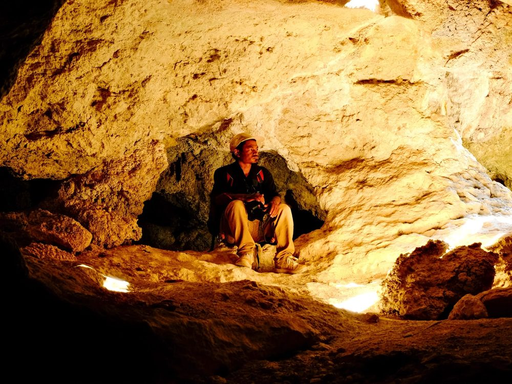
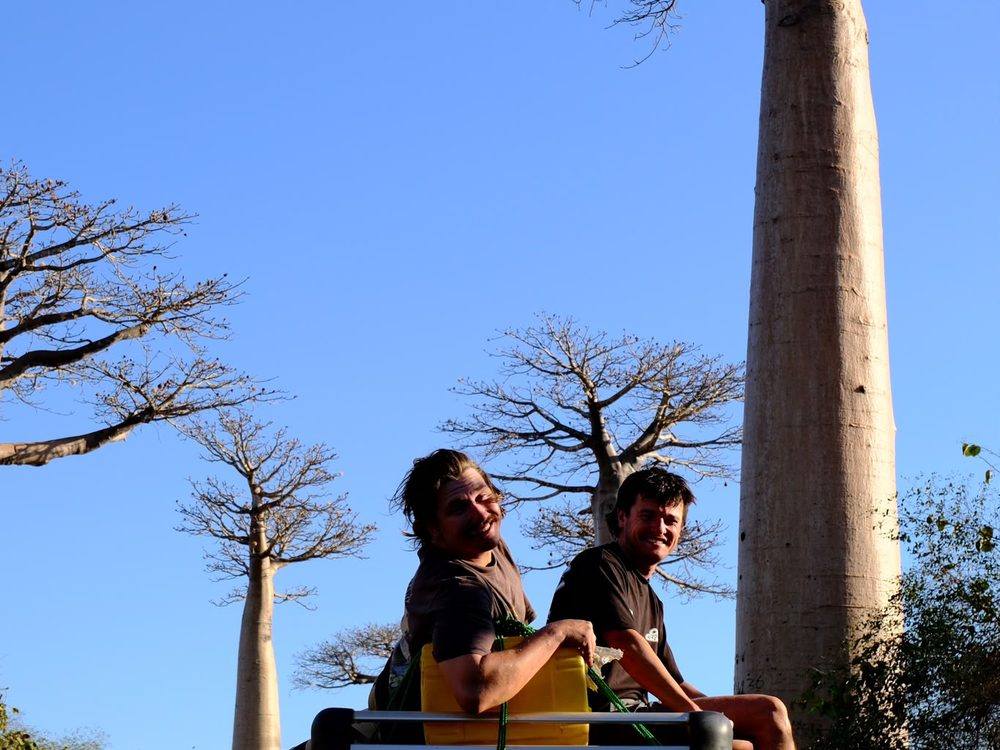
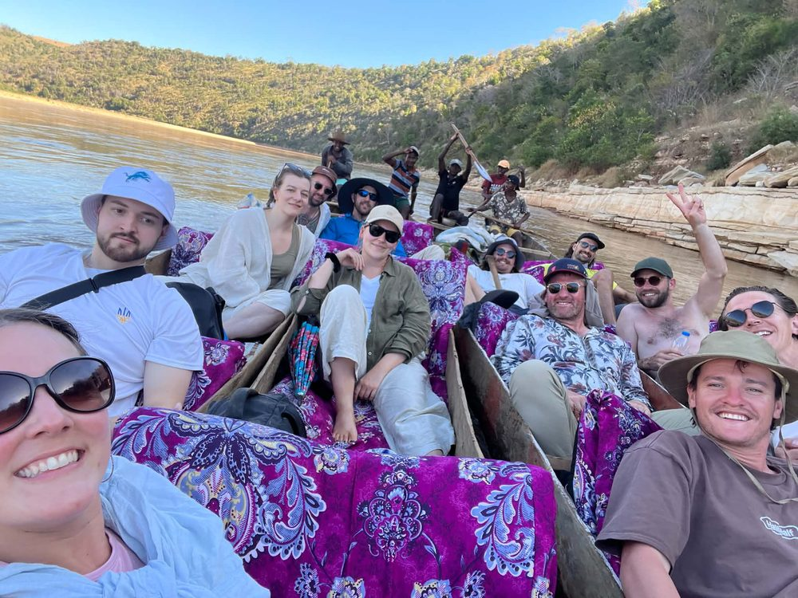

Lemurs, Baobabs & the Wild Coast
Canoe, Climb & Hike from Capital to Coast
20 – 29 July 2027 · 10 days · from €2,400 / £2,060
The idea
The stunning landscapes of Madagascar are not for the weak — there is little infrastructure, few roads, and no other group tour companies operating. 90% of Madagascar's mammals, plants & reptiles cannot be found anywhere else on Earth, and it is one of 17 of the most biodiverse countries on the planet, so there is so much to see.
With 112 lemur species, colourful chameleons, and baobabs that look like somebody planted them upside down, we traverse across great distances to show you the unique diversity. This tour is active and dynamic — you will be canoeing across the windy Tsiribihina River, camping under the stars, hiking & climbing the jagged rocks of a UNESCO World Heritage national park, animal spotting during the night, and riding through Madagascar's most famous site: the Avenue of the Baobabs.
We have a few options for you. Experience Madagascar Part One starts in the capital (Tana) and finishes in Morondava on the west coast. Part Two continues from Morondava, south to Ifaty, covering the southern section from canyons to rainforest and finishing back in the capital. You may do Part One, Part Two, or the whole Experience Madagascar Grand Tour — just ask.




Day by day
-
1
Antananarivo
Land, we pick you up from the airport, let you check-in, shower, relax a bit. Then we have our first meal and welcome drinks as a team.
-
2
Lake Tritiva & Antsirabe
Morning drive, group lunch, then a loop of the beautiful Lake Tritiva. Join us tonight for drinks & a boogie in town.
-
3
The Highlands & Miandrivazo
Say goodbye to roads and cities, we head west into the small-villaged highlands, where the desert meets the river. Afternoon of fun in the sun, in one of Madagascar's warmest areas.
-
4
Canoe Adventure on the Tsiribihina
Our first day on the river takes us into the depths of Madagascar, where few get to roam. We pass rural villages, wild lemurs, refreshing with a waterfall swim before setting up camp under the stars.
-
5
Tsiribihina River
Today, the landscape begins to change from highlands to jungle, and back to plains and small-village fishing with rice paddies. Our relaxing day takes us past one of the most remote areas of the country, before enjoying dinner, music, and dance by firelight.
-
6
Belo Sur Tsiribihina
We love an adventure, and today we pivot from canoe to 4x4, and onto Madagascar's most interesting self-made transport system: the floating barge boat. Our 4x4s cruise north to the plains, where roads and infrastructure cease to exist, yet the views remain exhilarating.
-
7
Tsingy de Bemaraha
Today we hike and via ferrata our way through the UNESCO World Heritage National Park's most jagged landscapes. We traverse between caves, rocks that you could mistake for a moon landing, and dense forests with species of lemurs and birds found only in this park.
-
8
Kirindy National Park
Using our final barge boats, we climb atop our 4x4s, floating under the baobab branches and into one of the best sunsets you will ever see.
-
9
The Avenue of the Baobabs
Over to the west coast near Morondava for sunset among the baobabs. Worth the drive on its own.
-
10
The coast
Finish on the water — pirogues, snorkelling, and a few days of doing very little after a fortnight of moving.
What's included
In the price
- Tour leader with you for the whole trip
- Airport pick-up to the group hotel
- Local tour, national park & climbing guides
- Trip photographer
- Eco lodges & hotels, local-owned and locally run
- All activities: canoeing, camping, hiking and the rest
- Drivers, transport & fuel
- National park permits & entrance fees
- Internal flights
- All breakfasts & most dinners
- Tips & gratuities
- Packing list & support
Not in the price
- International flights
- Travel insurance (required)
- Your visa
- Lunches
- Alcohol
- Optional single room supplement